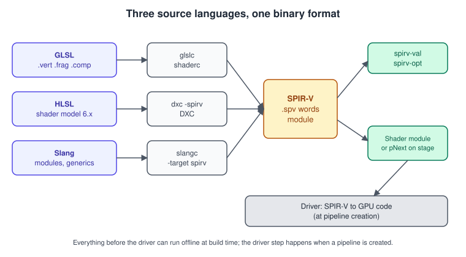
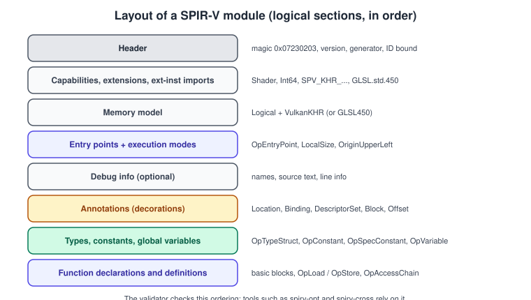
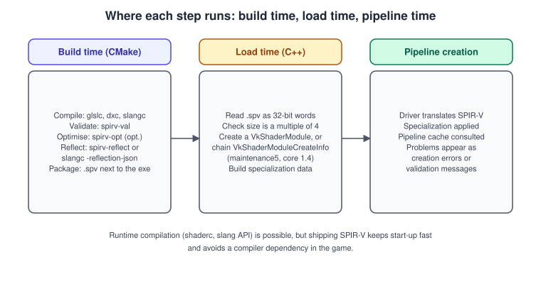
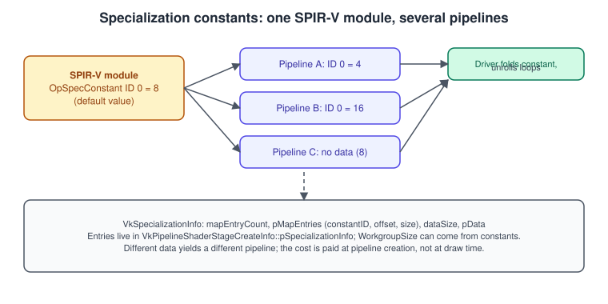
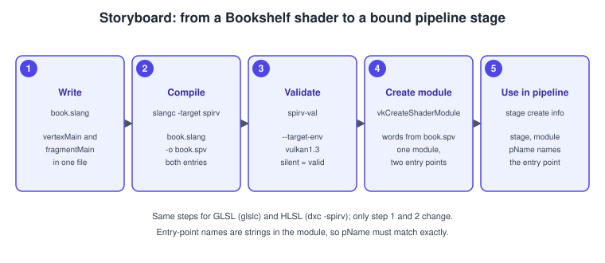

Shaders, SPIR-V and Shading Languages
|
This content was generated with the assistance of AI and should be verified against the official documentation before being relied on in production. |
Vulkan drivers do not read shader source code. They read SPIR-V, a binary intermediate language, and turn it into the instructions of one particular GPU when a pipeline is created. Everything above that, whether you write GLSL, HLSL or Slang, is the job of a compiler that you run yourself, usually at build time. That split is the most visible difference from OpenGL, where the driver contained the GLSL compiler, and it gives you a free choice of language, offline validation and predictable start-up times, at the price of one more tool in the build.
The facts were checked in November 2026. The version documented is Vulkan 1.4 (headers 1.4.3xx, LunarG SDK 1.4.363.0) with Vulkan 1.3 as the minimum for the running example, SPIR-V 1.6 (the version Vulkan 1.3 and 1.4 require support for), Slang release v2026.20 (2026-10-17, hosted by Khronos since 2024-11-21), and the GLSL, HLSL and Slang front ends that ship in the SDK. The examples compile and run on Windows, Linux, Android and, through MoltenVK or KosmicKrisp, macOS; the tools run on the development machine, so no shader tool is needed on the target.
This page belongs to the Vulkan Bookshelf (C++20, Vulkan-Hpp RAII, VMA, GLFW or SDL3). Its shaders are written in Slang, the primary language of the Khronos Vulkan Tutorial, with GLSL and HLSL shown as equivalent alternatives. The page covers the language-neutral parts (SPIR-V, tools, shader modules, specialization constants) and the three languages side by side; how shader resources are bound is in Descriptors and Push Constants, how their memory layout is decided is in Shader Memory Layout, and the first pipeline that uses these shaders is built in Bookshelf 01: From Triangle to Textured Book. The comparison of shading languages across all APIs is in Shading Languages Landscape; the OpenGL version of this story is in The GLSL Language and OpenGL Shaders and Programs; the Metal counterpart uses MSL, see the Metal 4 hello triangle.
The toolchain at a glance

| Language | Compiler | Strengths | Costs |
|---|---|---|---|
GLSL |
|
Closest to what OpenGL programmers know; the largest body of Vulkan examples; every Vulkan shader stage and extension is exposed. |
Fewer abstraction tools: no modules, no generics, preprocessor-based reuse. Vulkan GLSL is a dialect with its own rules (see below). |
HLSL |
|
Reuses DirectX shaders and skills; shader model 6.x features, including ray tracing and mesh shaders, map to SPIR-V. |
Not every HLSL feature has a SPIR-V mapping; Vulkan-specific binding and layout details need |
Slang |
|
Modules and |
Newer ecosystem, and interface dispatch is usually specialised away at compile time but the Vulkan Guide advises profiling to confirm. |
The output is the same. A SPIR-V module does not remember which language it came from, which is why you can mix: a vertex shader from Slang and a fragment shader from GLSL in one pipeline is fine.
What SPIR-V is
SPIR-V (Standard Portable Intermediate Representation) is a Khronos binary format: a stream of 32-bit words, in static single assignment form, with a fixed header and a list of instructions. Its design goals explain several Vulkan rules:
-
Binary and compact: no text parsing in the driver, and a small, well-defined surface to validate.
-
Typed and structured: every value has a type, and control flow is structured (loops and selections have declared merge points), which drivers can compile more reliably than arbitrary jumps.
-
Extensible: capabilities, extensions and extended instruction sets add features without changing the core.
Module layout

The header holds the magic number 0x07230203, the SPIR-V version, a generator ID that identifies the compiler and an ID bound. Then come the declarations the driver needs before any code: the capabilities the module uses, the memory model (Logical addressing with the GLSL450 model, or the Vulkan model), the entry points with their execution model (Vertex, Fragment, GLCompute, MeshEXT, RayGenerationKHR and so on) and execution modes such as LocalSize or OriginUpperLeft. A single module can contain several entry points, which is how a Slang file with a vertex and a fragment entry compiles to one .spv.
The abridged disassembly of a fragment shader that writes an orange colour shows the shape of the format (produced by spirv-dis, with names added by the compiler):
OpCapability Shader
%1 = OpExtInstImport "GLSL.std.450"
OpMemoryModel Logical GLSL450
OpEntryPoint Fragment %main "main" %outColor
OpExecutionMode %main OriginUpperLeft
OpSource GLSL 450
OpName %main "main"
OpName %outColor "outColor"
OpDecorate %outColor Location 0
%void = OpTypeVoid
%3 = OpTypeFunction %void
%float = OpTypeFloat 32
%v4float = OpTypeVector %float 4
%_ptr_Output_v4float = OpTypePointer Output %v4float
%outColor = OpVariable %_ptr_Output_v4float Output
%float_1 = OpConstant %float 1
%float_0_5 = OpConstant %float 0.5
%float_0 = OpConstant %float 0
%orange = OpConstantComposite %v4float %float_1 %float_0_5 %float_0 %float_1
%main = OpFunction %void None %3
%5 = OpLabel
OpStore %outColor %orange
OpReturn
OpFunctionEndSource: Vulkan Guide: SPIR-V
Reading this once is enough to demystify the format. Location 0 is a decoration (an annotation attached to an ID); Output is a storage class (where the variable lives); OpStore writes through a pointer. Descriptor bindings appear the same way, as DescriptorSet and Binding decorations on a variable in the Uniform, StorageBuffer or UniformConstant storage class, and push constants as a variable in PushConstant.
Capabilities, extensions and device features
A module states what it needs. Each SPIR-V capability or extension corresponds to a Vulkan requirement that you must satisfy when you create the device, or the module is invalid for that device.
| SPIR-V needs | Vulkan requirement |
|---|---|
|
The |
|
|
|
|
|
|
|
|
|
Subgroup operation support, see Compute Shaders and Subgroups. |
|
The extension and its feature; see Mesh and Task Shaders and Ray Tracing. |
The compiler adds capabilities automatically from what the source uses, so the way to find out what a shader needs is to run spirv-dis and read the OpCapability lines, or to rely on the validation layers, which report a shader that uses a capability whose feature was not enabled. The profile and feature-chain mechanics (pNext, VkPhysicalDeviceVulkan13Features) are in Versions, Profiles and Extensions.
Versions and the memory model
The SPIR-V version a Vulkan version must accept grows with the API: Vulkan 1.0 requires SPIR-V 1.0, 1.1 requires 1.3, 1.2 requires 1.5, and 1.3 requires 1.6 (and so does 1.4). Newer versions add instructions that make some shaders smaller or simpler, so a compiler targeting a higher environment (--target-env=vulkan1.3) emits SPIR-V 1.6. Compile for the lowest Vulkan version you actually support.
The Vulkan memory model defines how loads and stores on shared memory (workgroup shared memory, storage buffers and images) are ordered across invocations. Before Vulkan 1.3 it was optional and many shaders relied on the older GLSL450 model, which is simply what the example above declares. In Vulkan 1.3 the feature became mandatory, so a module can declare OpMemoryModel Logical Vulkan with the VulkanMemoryModel capability and use explicit scopes and semantics on atomics and barriers (in GLSL through GL_KHR_memory_scope_semantics). You only need this for fine-grained inter-invocation communication, mostly in compute shaders; ordinary rendering shaders do not change.
GLSL with glslc
Vulkan GLSL is OpenGL’s language with a Vulkan-specific dialect. The differences that matter in practice, all enforced by the compiler when targeting Vulkan:
-
Every resource needs an explicit
layout(set = N, binding = M); there are no default-block uniforms. Small constant data goes in apush_constantblock. -
Vertex inputs and stage interfaces need explicit
layout(location = N). -
The vertex stage uses
gl_VertexIndexandgl_InstanceIndex, which include the base offsets (gl_VertexIDandgl_InstanceIDdo not exist). -
#version 450is the usual minimum;#version 460is available. Extension directives such as#extension GL_EXT_nonuniform_qualifier : enableexpose Vulkan-specific features. -
Clip space has Y pointing down and depth in the range 0 to 1, unlike OpenGL (Coordinate Spaces and Transforms and Porting OpenGL to Vulkan, Metal and WebGPU explain how to adapt a projection matrix).
-
Samplers:
sampler2Dis a combined image sampler descriptor;texture2Dplussamplerare separate.
The Bookshelf book shader in GLSL, a vertex stage and a fragment stage that apply a camera matrix, a per-object model matrix and a cover texture:
// book.vert
#version 450
layout(set = 0, binding = 0) uniform Camera { mat4 viewProj; } camera;
layout(push_constant) uniform Push { mat4 model; } pc;
layout(location = 0) in vec3 inPosition;
layout(location = 1) in vec2 inUv;
layout(location = 0) out vec2 vUv;
void main() {
gl_Position = camera.viewProj * pc.model * vec4(inPosition, 1.0);
vUv = inUv;
}// book.frag
#version 450
layout(set = 0, binding = 1) uniform sampler2D coverTexture;
layout(location = 0) in vec2 vUv;
layout(location = 0) out vec4 outColor;
void main() {
outColor = texture(coverTexture, vUv);
}glslc --target-env=vulkan1.3 -O -g -o book.vert.spv book.vert
glslc --target-env=vulkan1.3 -O -g -o book.frag.spv book.fragSource: Vulkan Guide: SPIR-V and LunarG Vulkan SDK documentation
glslc takes the stage from the extension (.vert, .frag, .comp, .mesh and so on) or from -fshader-stage=. Useful options: --target-env= selects the Vulkan version (and with it the default SPIR-V version), --target-spv= overrides the SPIR-V version, -O optimises and -O0 disables optimisation, -g keeps debug information for tools like RenderDoc, -DNAME=value defines a macro and -I adds an include directory. glslangValidator -V is the older reference front end that glslc wraps; it is still shipped and behaves similarly, but glslc has the more convenient command line and include support.
HLSL with DXC
DXC compiles HLSL to SPIR-V with the -spirv flag. HLSL has no notion of descriptor sets, so Vulkan details come from attributes: [[vk::binding(binding, set)]] on resources, [[vk::location(n)]] on stage inputs and outputs, [[vk::push_constant]] on the push-constant block and [[vk::constant_id(n)]] on specialization constants. The same shader in HLSL:
// book.hlsl
struct Camera { float4x4 viewProj; };
struct Push { float4x4 model; };
[[vk::binding(0, 0)]] ConstantBuffer<Camera> camera;
[[vk::push_constant]] Push pc;
[[vk::binding(1, 0)]] Texture2D coverTexture;
[[vk::binding(2, 0)]] SamplerState coverSampler;
struct VSIn { [[vk::location(0)]] float3 position : POSITION; [[vk::location(1)]] float2 uv : TEXCOORD0; };
struct VSOut { float4 position : SV_Position; [[vk::location(0)]] float2 uv : TEXCOORD0; };
VSOut vertexMain(VSIn input) {
VSOut o;
// HLSL matrices are column-major in memory by default, which matches GLM data.
o.position = mul(camera.viewProj, mul(pc.model, float4(input.position, 1.0)));
o.uv = input.uv;
return o;
}
float4 fragmentMain(VSOut input) : SV_Target {
return coverTexture.Sample(coverSampler, input.uv);
}dxc -spirv -T vs_6_0 -E vertexMain -fspv-target-env=vulkan1.3 book.hlsl -Fo book.vert.spv
dxc -spirv -T ps_6_0 -E fragmentMain -fspv-target-env=vulkan1.3 book.hlsl -Fo book.frag.spvSource: Vulkan Guide: HLSL in Vulkan
DXC compiles one entry point per invocation. -T names the target profile (vs_6_0, ps_6_0, cs_6_0; ray tracing uses lib_6_3 or newer, mesh and task shaders ms_6_5 and as_6_5 or newer), -E the entry point and -Fo the output. Extensions are enabled automatically from the features the shader uses; -fspv-extension=SPV_EXT_descriptor_indexing forces one on. HLSL texture and sampler objects are separate, so the Vulkan binding has a sampled-image descriptor and a sampler descriptor, unlike the combined sampler2D of GLSL.
Slang with slangc
Slang is a shading language developed as an open-source project and governed by Khronos since 2024-11-21. It keeps HLSL-like syntax and adds the features large renderers need:
-
Modules: each file can declare a module (
module Lighting;), withpublicsymbols imported byimport. -
Generics and interfaces: functions and types parameterised over types, and
interfacetypes that structs conform to, so a material or light model can be swapped without duplicating shaders. -
Multiple targets: the same source compiles to SPIR-V, and to other targets, which keeps one code base across Vulkan and other APIs.
-
Reflection: a compile-time reflection API that reports the layout of parameters, so an engine does not hard-code binding numbers.
The Bookshelf shader in Slang, compiled as one file with two entry points:
// book.slang
struct Camera { float4x4 viewProj; };
struct Push { float4x4 model; };
[[vk::binding(0, 0)]] ConstantBuffer<Camera> camera;
[[vk::push_constant]] ConstantBuffer<Push> pc;
[[vk::binding(1, 0)]] Sampler2D coverTexture; // combined image sampler
struct VSIn {
float3 position : POSITION;
float2 uv : TEXCOORD0;
};
struct VSOut {
float4 position : SV_Position;
float2 uv : TEXCOORD0;
};
[shader("vertex")]
VSOut vertexMain(VSIn input) {
VSOut o;
o.position = mul(camera.viewProj, mul(pc.model, float4(input.position, 1.0)));
o.uv = input.uv;
return o;
}
[shader("fragment")]
float4 fragmentMain(VSOut input) : SV_Target {
return coverTexture.Sample(input.uv);
}# All entry points of the file into one SPIR-V module (GLM matrices are column-major)
slangc book.slang -target spirv -matrix-layout-column-major -o book.spv
# One stage at a time, when separate files per stage are preferred
slangc book.slang -target spirv -entry vertexMain -stage vertex -o book.vert.spvBoth forms are the ones shown in the Vulkan Guide. slangc can also read existing HLSL (-lang hlsl) or GLSL (-allow-glsl) input, which lets you migrate a project one file at a time. Choose the matrix layout explicitly (as above) so that the CPU’s data and the shader agree; a transposed matrix is the most common first bug. The Slang Vulkan Guide page also lists how newer capabilities such as spvDescriptorHeapEXT are requested with -capability (see Bindless Descriptors).
Choosing a language
The SPIR-V tools

The SDK includes the SPIRV-Tools and SPIRV-Cross command-line programs:
| Tool | Use |
|---|---|
|
Validates a module against the SPIR-V rules and against a Vulkan environment: |
|
Disassemble to text and assemble back. Reading the disassembly is the quickest way to see capabilities, decorations and the exact types a compiler produced. |
|
Optimiser: |
|
Links modules that declare imported and exported functions. |
|
Converts SPIR-V back to GLSL, HLSL or MSL, which is how some engines port shaders to other APIs (see Cross-Platform Translation Layers). |
|
Report entry points, descriptor bindings, push constant ranges and stage inputs and outputs from a compiled module. |
Reflection: reading the bindings from the binary
Hard-coding binding numbers in C++ duplicates information that already lives in the shader. SPIRV-Reflect reads it from the module so pipeline layouts can be built (or at least checked) automatically:
#include <spirv_reflect.h>
void printBindings(const std::vector<uint32_t>& words)
{
SpvReflectShaderModule module{};
if (spvReflectCreateShaderModule(words.size() * sizeof(uint32_t), words.data(), &module) !=
SPV_REFLECT_RESULT_SUCCESS) {
throw std::runtime_error("not a valid SPIR-V module");
}
uint32_t count = 0;
spvReflectEnumerateDescriptorBindings(&module, &count, nullptr);
std::vector<SpvReflectDescriptorBinding*> bindings(count);
spvReflectEnumerateDescriptorBindings(&module, &count, bindings.data());
for (const auto* b : bindings) {
std::printf("set %u binding %u: %s (descriptor type %d)\n",
b->set, b->binding, b->name, static_cast<int>(b->descriptor_type));
}
spvReflectDestroyShaderModule(&module);
}Source: SPIRV-Reflect
Slang’s own reflection API gives richer information (parameter blocks, user attributes) at compile time; either way, the aim is a single source of truth.
Creating shader modules
A VkShaderModule wraps a SPIR-V binary. It is not itself a pipeline stage, only the container from which VkPipelineShaderStageCreateInfo selects an entry point. The loader reads the file into a vector of 32-bit words (SPIR-V is defined as words, and pCode must be 4-byte aligned) and the code size passed to Vulkan is in bytes.
#include <vulkan/vulkan_raii.hpp>
#include <array>
#include <cstdint>
#include <filesystem>
#include <fstream>
#include <span>
#include <stdexcept>
#include <vector>
std::vector<uint32_t> readSpirv(const std::filesystem::path& path)
{
std::ifstream file(path, std::ios::ate | std::ios::binary);
if (!file) throw std::runtime_error("cannot open " + path.string());
const auto bytes = static_cast<std::size_t>(file.tellg());
if (bytes == 0 || bytes % sizeof(uint32_t) != 0) {
throw std::runtime_error("not a SPIR-V file: " + path.string());
}
std::vector<uint32_t> words(bytes / sizeof(uint32_t));
file.seekg(0);
file.read(reinterpret_cast<char*>(words.data()), static_cast<std::streamsize>(bytes));
return words;
}
vk::raii::ShaderModule createShaderModule(const vk::raii::Device& device, std::span<const uint32_t> code)
{
const vk::ShaderModuleCreateInfo info{{}, code.size_bytes(), code.data()};
return vk::raii::ShaderModule{device, info};
}
// One module, two entry points: the stages select them by name.
std::array<vk::PipelineShaderStageCreateInfo, 2> bookStages(const vk::raii::ShaderModule& module)
{
return {
vk::PipelineShaderStageCreateInfo{{}, vk::ShaderStageFlagBits::eVertex, *module, "vertexMain"},
vk::PipelineShaderStageCreateInfo{{}, vk::ShaderStageFlagBits::eFragment, *module, "fragmentMain"},
};
}Lifetime: the module is only needed while pipelines that use it are being created; you can destroy it right after vkCreateGraphicsPipelines returns (a RAII object does this when it leaves scope). With a GLSL-compiled pair of files you create two modules, both with entry point "main", which is the name glslc gives to the entry point.
Inline SPIR-V without a module (maintenance5, core 1.4)
VK_KHR_maintenance5, part of core Vulkan 1.4, deprecates the shader module object. Instead of creating a VkShaderModule, you chain a VkShaderModuleCreateInfo into the pNext of the VkPipelineShaderStageCreateInfo and leave module as VK_NULL_HANDLE. The driver reads the code during pipeline creation; there is no module to manage or destroy. It requires the maintenance5 feature.
// Vulkan 1.4 or VK_KHR_maintenance5 with the maintenance5 feature enabled.
void fillInlineStage(VkPipelineShaderStageCreateInfo& stage, VkShaderModuleCreateInfo& inlineCode,
const std::vector<uint32_t>& words, VkShaderStageFlagBits which, const char* entry)
{
inlineCode = {
.sType = VK_STRUCTURE_TYPE_SHADER_MODULE_CREATE_INFO,
.codeSize = words.size() * sizeof(uint32_t),
.pCode = words.data(),
};
stage = {
.sType = VK_STRUCTURE_TYPE_PIPELINE_SHADER_STAGE_CREATE_INFO,
.pNext = &inlineCode, // the code travels in the pNext chain
.stage = which,
.module = VK_NULL_HANDLE, // no VkShaderModule
.pName = entry,
};
}Code written for Vulkan 1.3 can keep using modules; both routes work in 1.4. A third route, VK_EXT_shader_object, skips pipelines altogether and is covered in Dynamic State, Shader Objects and Pipeline Libraries; the pipeline objects that consume the stages are in Graphics Pipeline Overview.
Specialization constants
A specialization constant is a constant whose value is supplied when the pipeline is created, not when the shader is compiled. The compiler leaves the value as a placeholder in the SPIR-V; the driver substitutes your number and then compiles, so branches on the constant disappear and loops over it can be unrolled. It is the Vulkan answer to the #define variants of an uber-shader.

// book.frag with specialization constants
#version 450
layout(constant_id = 0) const uint MAX_LIGHTS = 8; // ID 0, default 8
layout(constant_id = 1) const bool USE_SHADOWS = false; // ID 1, default false
layout(set = 0, binding = 2) uniform Lights { vec4 positions[16]; } lights;
layout(location = 0) out vec4 outColor;
void main() {
vec3 light = vec3(0.0);
for (uint i = 0; i < MAX_LIGHTS; ++i) { // unrolled by the driver for a small constant
light += lights.positions[i].rgb;
}
if (USE_SHADOWS) {
light *= 0.5; // placeholder for a shadow lookup
}
outColor = vec4(light, 1.0);
}In HLSL the same declaration is [[vk::constant_id(0)]] const uint MAX_LIGHTS = 8;. The C++ side builds a VkSpecializationInfo: a table that maps each constant ID to a byte range in a data block.
struct BookSpec {
uint32_t maxLights;
VkBool32 useShadows; // booleans are 32-bit in the data block
};
BookSpec data{.maxLights = 4, .useShadows = VK_TRUE};
const std::array<vk::SpecializationMapEntry, 2> entries{
vk::SpecializationMapEntry{0, offsetof(BookSpec, maxLights), sizeof(uint32_t)},
vk::SpecializationMapEntry{1, offsetof(BookSpec, useShadows), sizeof(VkBool32)},
};
const vk::SpecializationInfo specialization{
static_cast<uint32_t>(entries.size()), entries.data(), sizeof(data), &data};
vk::PipelineShaderStageCreateInfo fragmentStage{
{}, vk::ShaderStageFlagBits::eFragment, *fragmentModule, "main", &specialization};Rules and options:
-
A constant that is not in the map keeps its default. A map entry whose ID does not appear in the shader is ignored.
-
The
sizeof an entry must match the constant’s type;offsetandsizemust lie insidedataSize. -
In compute shaders the workgroup size can come from constants:
layout(local_size_x_id = 0, local_size_y_id = 1, local_size_z = 1) in;lets one shader serve devices with different preferred sizes (see Compute Shaders and Subgroups). -
Every distinct set of values is a distinct pipeline. The cost moves to pipeline creation; cache pipelines and use the pipeline cache so a variant is compiled once (see Graphics Pipeline Overview).
-
Specialization is for a few values chosen at load time. A value that changes every frame belongs in a push constant or uniform buffer.
Building shaders with CMake
Compile at build time so that a syntax error fails the build, not the first frame. A custom command compiles, a second step validates, and a custom target makes the output part of the default build:
find_program(SLANGC slangc HINTS $ENV{VULKAN_SDK}/bin REQUIRED)
find_program(SPIRV_VAL spirv-val HINTS $ENV{VULKAN_SDK}/bin REQUIRED)
set(BOOK_SLANG ${CMAKE_SOURCE_DIR}/shaders/book.slang)
set(BOOK_SPV ${CMAKE_BINARY_DIR}/shaders/book.spv)
add_custom_command(
OUTPUT ${BOOK_SPV}
COMMAND ${CMAKE_COMMAND} -E make_directory ${CMAKE_BINARY_DIR}/shaders
COMMAND ${SLANGC} ${BOOK_SLANG} -target spirv -matrix-layout-column-major -o ${BOOK_SPV}
COMMAND ${SPIRV_VAL} --target-env vulkan1.3 ${BOOK_SPV}
DEPENDS ${BOOK_SLANG}
COMMENT "Compiling and validating book.slang"
VERBATIM)
add_custom_target(bookshelf_shaders ALL DEPENDS ${BOOK_SPV})
add_dependencies(bookshelf bookshelf_shaders)Source: LunarG Vulkan SDK documentation
slangc ships with recent LunarG SDKs and as a separate Slang release. More build-system detail, including how to find the SDK and volk, is in Setup: SDK and Toolchain; C++ build tooling in general is in C++ Build and Tooling. Compiling shaders at run time, with the shaderc library, the Slang compilation API or glslang, is possible and convenient for hot reloading during development, but shipping SPIR-V keeps start-up fast and avoids a compiler in the game.
Storyboard: from a shader file to a pipeline stage

-
Write
book.slangwith both entry points and keep it next to the C++ it serves. -
Compile it with
slangc(orglslcanddxcfor the alternatives). -
Validate with
spirv-val --target-env vulkan1.3; silence means the module follows the rules. -
Read the words and create a shader module (or use inline SPIR-V).
-
Put the module and the entry point name into the stage create info of the pipeline, with optional specialization data.
Interfaces between stages
Stages communicate through variables with Location decorations. The rules, validated when the pipeline is created (the validation layers report mismatches clearly):
-
An output at location N of one stage must match an input at location N of the next in type and, where it matters, in interpolation qualifiers. An input without a matching output gets undefined values.
-
Vertex shader inputs are matched to
VkVertexInputAttributeDescription::location; see Vertex Input and Drawing. -
Fragment shader outputs go to the colour attachments by location.
-
Built-ins (
gl_Position,SV_Position,gl_FragCoord,gl_GlobalInvocationID) are decorated withBuiltIninstead of a location. -
The sum of push-constant ranges, descriptor sets and bindings the shader uses must be covered by the pipeline layout (see Descriptors and Push Constants).
Mistakes, performance and recent changes
| Mistake | Fix |
|---|---|
Reading the |
Open it in binary mode and check |
Entry point name mismatch ( |
|
Using a capability whose feature is not enabled |
Enable the feature at device creation (see Physical and Logical Devices) and run with the validation layers. |
Compiling for a higher SPIR-V or Vulkan environment than the device supports |
Pass |
Transposed matrices, upside-down images |
Set the matrix layout explicitly; apply the Y-flip or negative viewport height consistently; see Coordinate Spaces and Transforms. |
Different descriptor binding numbers in the shader and in the C++ layout |
Reflect the binding numbers or define them in one shared header or Slang module. |
Shipping unvalidated shaders |
|
Performance notes:
-
Pipeline creation compiles the SPIR-V for the GPU; this is the expensive step and can take milliseconds per pipeline. Create pipelines at load time, use a pipeline cache and consider background compilation.
-
The offline optimiser rarely beats the driver compiler by much; do not rely on
spirv-opt -Ofor speed. -
Specialization constants and shader variants trade pipeline count against run-time branches; a branch on a uniform value is cheap, a pipeline switch is not.
-
16-bit types and subgroup operations can raise throughput on GPUs that support them, at the cost of the feature requirements in the table above.
What changed recently:
-
Vulkan 1.3 (2022) made SPIR-V 1.6 and the Vulkan memory model mandatory.
-
Slang moved under Khronos governance on 2024-11-21 and is the primary language of the Khronos Vulkan Tutorial; release v2026.20 was published 2026-10-17.
-
Vulkan 1.4 (2024-12-03) made maintenance5 core, so shader modules are deprecated in favour of inline SPIR-V in the stage create info.
-
Roadmap 2026 (announced 2026-01-23) and the descriptor heap extension (introduced with Vulkan 1.4.340) change how resources are declared in shaders; Slang exposes the matching capability.
Where older guides are outdated
| Older teaching | Today |
|---|---|
Vulkan Programming Guide ch. 6, Vulkan Cookbook ch. 7: compile GLSL with |
|
Both books: SPIR-V 1.0 and SDK 1.0.x tools |
SPIR-V 1.6 is required by Vulkan 1.3 and 1.4; the validator takes a Vulkan environment ( |
Both books: a |
Inline SPIR-V through |
Both books: shaders written in GLSL |
Slang is Khronos-hosted and the language of the Khronos Vulkan Tutorial; HLSL is supported through DXC. |
Specialization constants rarely shown |
They replace many |
See also
-
Shading Languages Landscape for the general comparison of GLSL, HLSL, MSL, WGSL and Slang.
-
The GLSL Language for the OpenGL view of GLSL.
-
Shader Memory Layout for std140, std430 and scalar layouts.
-
Vulkan-Hpp, RAII and C++ Bindings for the C++ types used above.
References
-
Vulkan Guide, SPIR-V: https://docs.vulkan.org/guide/latest/what_is_spirv.html
-
Vulkan Guide, HLSL in Vulkan: https://docs.vulkan.org/guide/latest/hlsl.html
-
Vulkan Guide, Slang Shading Language in Vulkan: https://docs.vulkan.org/guide/latest/slang.html
-
Vulkan Guide, Shader memory layout: https://docs.vulkan.org/guide/latest/shader_memory_layout.html
-
Vulkan specification, shaders and pipelines: https://docs.vulkan.org/spec/latest/index.html
-
SPIR-V registry: https://registry.khronos.org/SPIR-V/
-
Vulkan reference, VK_KHR_maintenance5: https://docs.vulkan.org/refpages/latest/refpages/source/VK_KHR_maintenance5.html
-
Khronos Vulkan Tutorial: https://docs.vulkan.org/tutorial/latest/00_Introduction.html
-
LunarG Vulkan SDK documentation: https://vulkan.lunarg.com/doc/sdk
-
Slang: https://shader-slang.org
-
SPIRV-Reflect: https://github.com/KhronosGroup/SPIRV-Reflect
-
Vulkan Programming Guide (InformIT): https://www.informit.com/store/vulkan-programming-guide-the-official-guide-to-learning-9780134464541
-
Vulkan Cookbook (Packt): https://www.packtpub.com/en-us/product/vulkan-cookbook-9781786468154